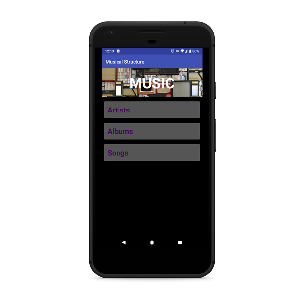
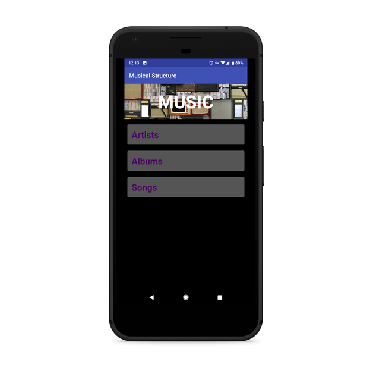

Welcome! My name is Joe Tiersma and I'm a front-end web and mobile app developer.
About Joe
My career journey started in 2017 when I first started learning HTML, CSS, and Python through Codecademy. Later that year I applied to the Grow with Google Scholarship through Udacity. I was selected for the first round and began learning Java and XML.
The first round started in Janurary 2018 and was three months long. It was to evaluate the skill, dedication, and communication among all applicants. I was chosen as part of the top 10% of applicants to move onto the final round of access to the full Nanodegree program. In October 2018 I graduated Udacity with my Nanodegree in Android Basics.
I then began relearning HTML and CSS through freeCodeCamp. I am currently learning JavaScript and working my way through the rest of the freeCodeCamp courses. I am freelancing and building fun side projects while I search for a company I can be a part of.
Portfolio
I am an advocate for accessibility in tech and all areas of life. I spent 13 years working with students with autism and have seen the positive impacts that it has had on them. I want to build the tech that helps people of all albility levels and increase awareness of the importance of accessibility in all areas of tech.


 



Blog
Contact
You can find me at...